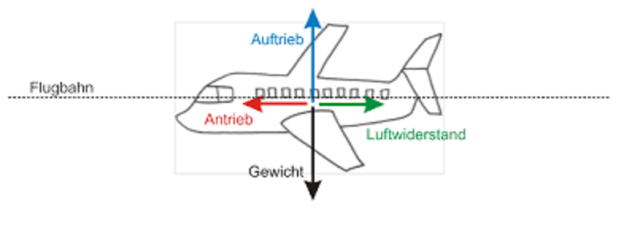

FLIEGEN...
...wie geht das?
Auf ein Flugzeug wirken im Prinzip vier physikalische Kräfte ein: Die Schwerkraft zieht es nach unten, der Auftrieb wirkt nach oben und hält das Flugzeug in der Luft. Der Vortrieb bewegt das Flugzeug vorwärts, der Widerstand bremst es. Erst wenn der Auftrieb größer als die Schwerkraft ist, hebt das Flugzeug ab. Im Gegensatz zu Luftschiffen oder Ballonen, die einfach schweben, weil sie leichter als Luft sind, entsteht der Auftrieb bei Flugzeugen also erst, wenn die Luft die Tragflächen schnell genug umströmt und so immer mehr Auftrieb erzeugt wird. Dazu wird der sogenannte Vortrieb benötigt, den Propeller oder Düsentriebwerke liefern. Mit diesem Wissen im Hinterkopf haben Ingenieure in der Vergangenheit den Flugzeug-Bau immer weiter verbessert. Doch es gibt noch immer viel zu tun: Künftige Flugzeuge sollten noch weniger Kraftstoff verbrauchen und weniger Abgase produzieren. Außerdem müssen sie noch leiser werden, damit die Lärmbelästigung für die Menschen am Boden verringert wird.
Man braucht aber nicht unbedingt ein Flugzeug um fliegen zu können. Wie es auch ohne geht seht ihr im folgenden Video. Hier wird einfach erklärt wie man am Besten vom Boden abheben kann:
Oder sie versuchen es einfach mit einem Besen, wie man hier sehen kann: